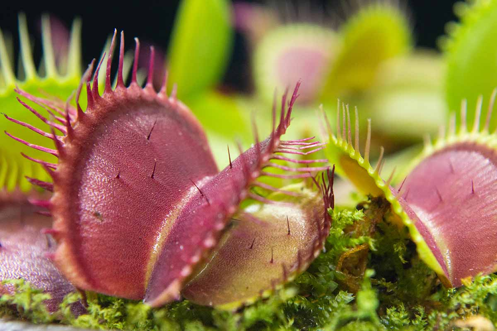

The Story
The typical story of nature places plants at the bottom of the food chain—passive producers that quietly turn sunlight into energy. But in boggy, highly acidic soils stripped of essential nutrients like nitrogen and phosphorus, passive survival is not an option. To compensate for the barren ground, carnivorous plants developed the extraordinary ability to consume insects and small organisms.
Their hunting methods are as diverse as they are ruthless. The famous Venus flytrap uses a "snap trap," relying on tiny trigger hairs that, when touched in quick succession by an unsuspecting insect, cause the specialized leaves to snap shut in a fraction of a second. Meanwhile, Pitcher plants employ "pitfall traps." They lure prey with sweet nectar and vibrant colors, leading insects to the edge of a slippery rim where they fall into a pool of digestive enzymes below.
Then there are the Sundews, which look like jewels glistening in the sun. They use "flypaper traps," secreting a sticky, sweet-smelling mucilage on the ends of their tentacles. When a bug lands to feed, it becomes helplessly stuck, and the plant slowly wraps its tentacles around the prey to digest it. These plants blur the conventional lines between flora and fauna, proving that life is incredibly adaptable, constantly finding brilliant and sometimes terrifying ways to extract the energy required to exist in a harsh universe.

Philosophical Questions
Where is the boundary between plant and animal?
We are taught to categorize plants as passive and animals as active. Yet, a Venus flytrap sensing its prey and snapping shut is a dynamic, predatory action.
This challenges our neat categorizations of the natural world, suggesting that the line between flora and fauna is not a solid wall, but a fascinating, blurred spectrum.
Is deception a fundamental tool for survival?
Carnivorous plants do not hunt by chasing; they hunt by lying. They offer sweet scents and the promise of nectar, only to deliver a fatal trap.
This raises the thought that survival often relies just as much on outsmarting the environment as it does on overpowering it.
How does adversity drive innovation?
If these plants had grown in rich, fertile soil, they would have never evolved such complex trapping mechanisms. Their deadly beauty is a direct result of extreme hardship.
It serves as a profound reminder that the most difficult and barren conditions often forge the most creative, resilient, and brilliant adaptations in nature.